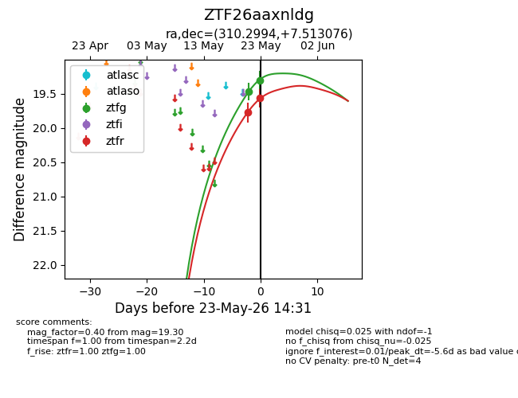
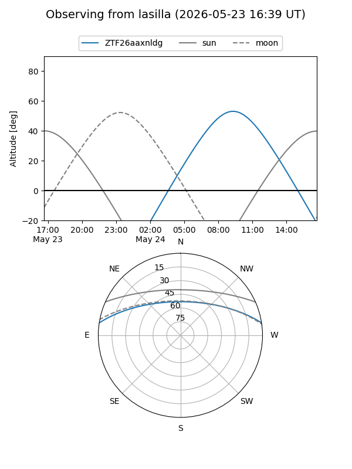
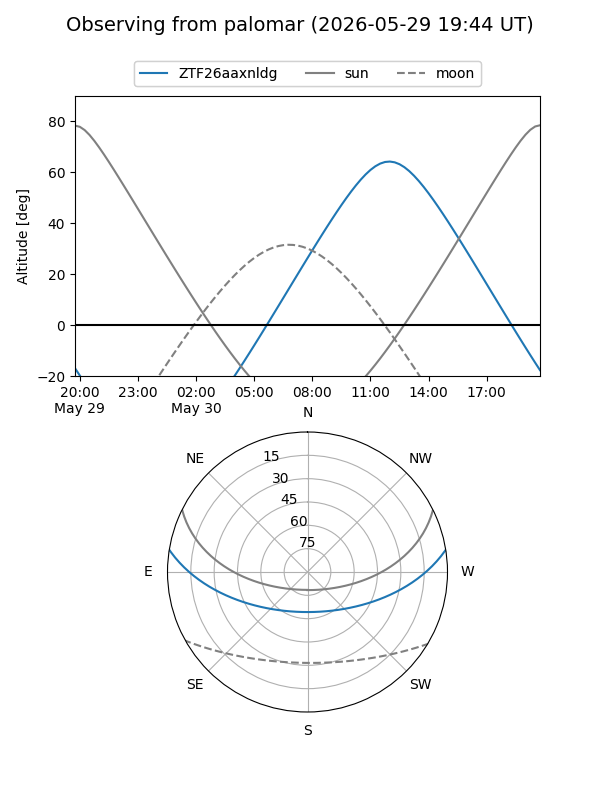
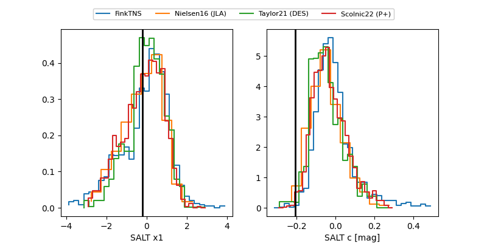

ZTF26aaxnldg
Target ZTF26aaxnldg at 2026-05-23 14:33
Aliases and brokers:
lsst-FINK: link
lsst-Lasair: link
lsst-ALeRCE: link
ztf-FINK: link
ztf-Lasair: link
ztf-ALeRCE: link
alt names
ZTF26aaxnldg (ztf,fink_ztf)
Coordinates:
equatorial (ra, dec) = 310.2994,+7.51308
equatorial (HMS+DMS) = 20:41:11.86,+07:30:47.07
galactic (l, b) = (53.1869,-20.30278)
Flags:
Photometry:
last ztfg=19.30, ztfr=19.56
2 ztfg, 2 ztfr detections
Lightcurve

Visibility


Additional plots
